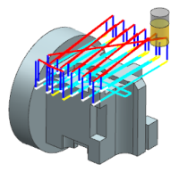
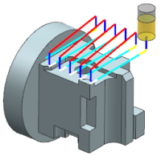
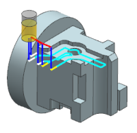

Review the tool path
-
In the Actions group, click Verify
 .
.
The Tool Path Visualization dialog box is displayed.

-
On the Replay tab, from the Display list, select Current Level.
The tool path for the top face is displayed.

-
Move the Animation Speed slider to 3.
-
Click Play.

Notice that each face has a different cut pattern. You specified a Follow Part cut pattern for the operation because this pattern follows the contours of the walls that bound the cut area floor. NX automatically assigned the Zig cut pattern to the upper face because this pattern is more efficient when the cut area floor is bound by a planar wall without contours. NX determines the cut direction by aligning the cut angle along the wall direction.
-
Click OK.
The Floor Wall IPW dialog box is displayed.
-
Click OK to save the operation.
-
Close the part without saving it.